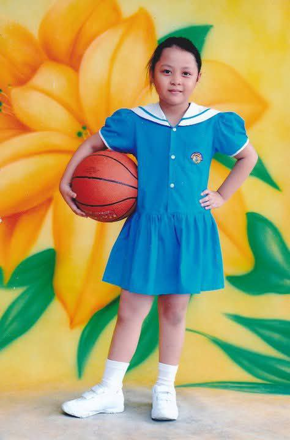
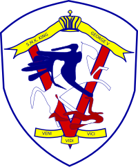
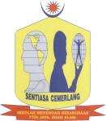

Tadika Silver Bells
Graduated from kindergarten in 2010. Developed early skills in reading, counting, creativity and new language which is Chinese.
SJK(C) Ladang Sungai Salak
Graduated from Chinese Primary School in 2016. Built a strong foundation in Mandarin, mathematics, and cultural studies.

SMK King George V
Completed three years of secondary education up to PT3 in 2019 before relocating to Shah Alam in 2020, just prior to the outbreak of COVID-19.

SMK TTDI Jaya
Graduated in 2022 after spending the final two years of high school in a new school, adapting to a new environment until SPM.

Universiti Teknologi MARA
Currently in my final semester of a Diploma in Information Management student at Rembau, Negeri Sembilan.